インドラマユ探検隊、出発進行！🚀
インドラマユってどんなところ？
西ジャワ州の北部に位置するインドラマユは、果物の楽園として有名な町です。
「マンゴーの王国」と呼ばれ、多種多様なジューシーなマンゴーが育つ土地。
もちろん、それだけじゃありません！自然の美しさ、歴史的な魅力、そして何より人々の温かさでいっぱいの町です。
インドラマユはインドネシアの西ジャワ州にある地域で、農業が盛んで、海沿いの美しい景色や豊かな文化が魅力です。
インドラマユはジャワ海に面した北の海岸にも位置していて、漁業が重要な産業となっている海沿いの村もいくつかあります。
また、スンダ地方とジャワ地方の文化が混ざり合っていて、伝統的なアートや舞踊、例えば影絵芝居のワヤンやケトゥクティルというスンダの舞踊が有名です。
歴史的にも、古代王国や植民地時代と関連があり、古代の寺院や遺跡などがその名残を伝えています。
農業以外にも、漁業や繊維業、食品加工などが経済を支えていて、海に面した立地から貿易や輸送にも重要な役割を果たしています。
全体的に、インドラマユは田舎の魅力と文化、自然が融合した素敵な場所です。
インドラマユの文化を体験しよう！
- ワヤンクリ（Wayang Kulit）（影絵芝居）
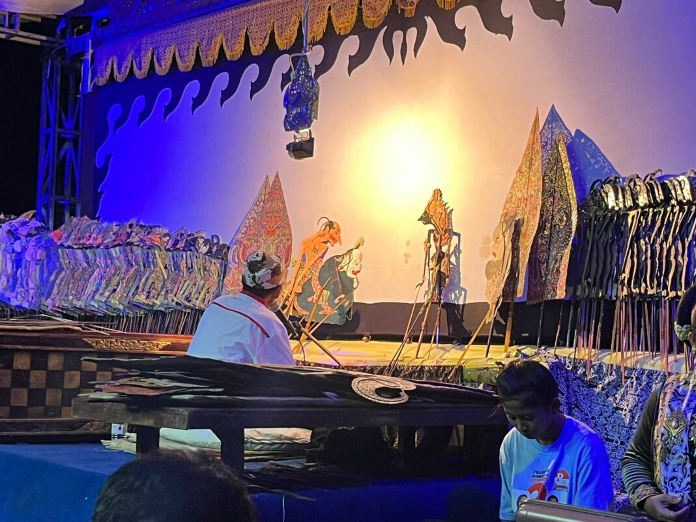
影絵芝居であるワヤンクリは、インドラマユの伝統文化の一つです。昔話や叙事詩（「ラーマーヤナ」や「マハーバーラタ」など）を題材に、独特なユーモアとローカルの物語が融合しています。観客を笑わせたり、考えさせたりするストーリーテリングは、世代を超えて愛されています。 - インドラマユバティック（Batik Indramayu）
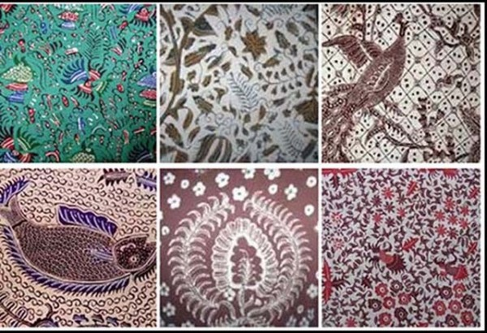 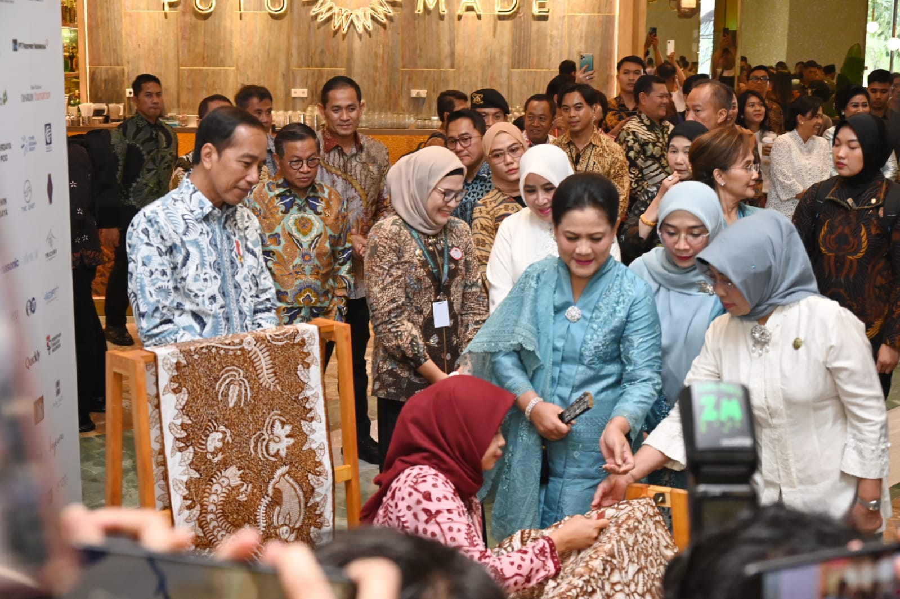
インドラマユのバティックは、そのユニークなデザインと鮮やかな色使いで知られています。モチーフには、魚や波、海藻など海をテーマにしたものが多く、地元の自然や生活を反映しています。他の地域のバティックとは一線を画す個性豊かなアートで、手作業で作られるその緻密さには感動を覚えます。お土産やインテリアにもぴったり！ - ガンジュレン・ダンス（Tari Genjring）
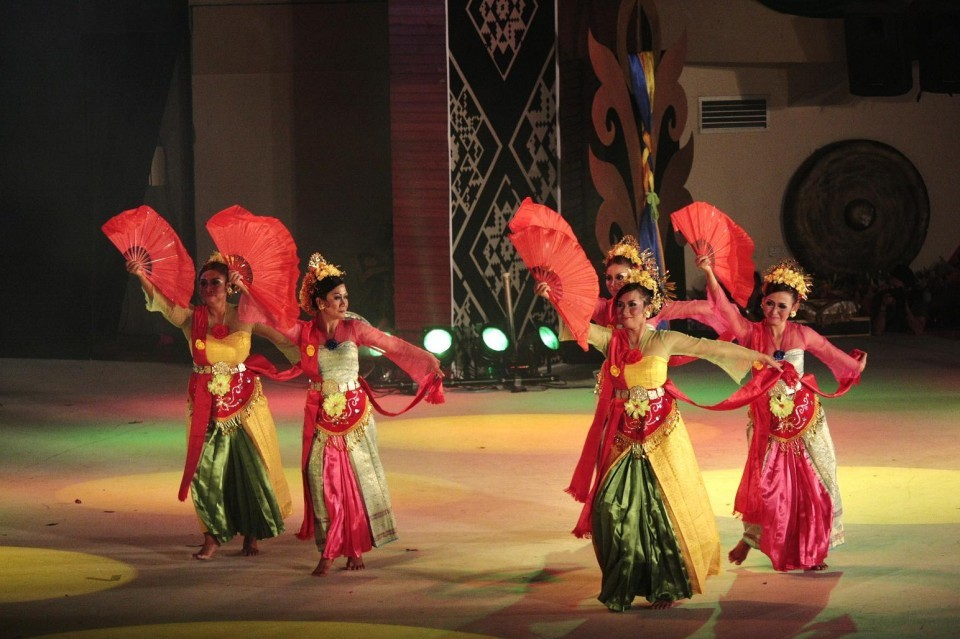 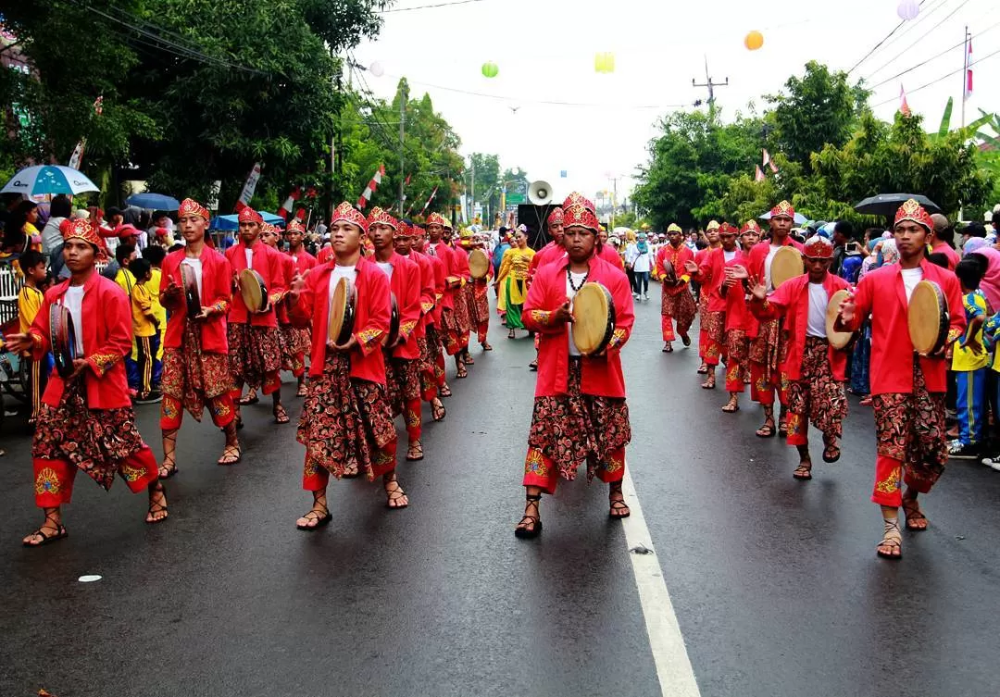
インドラマユ特有の伝統舞踊で、動きが軽やかで美しく、華やかな衣装が特徴です。地域の収穫祭や結婚式などのお祝いの場で披露されることが多く、地元の喜びや感謝の気持ちを表現しています。 - シンドレン（Sinden）と伝統音楽
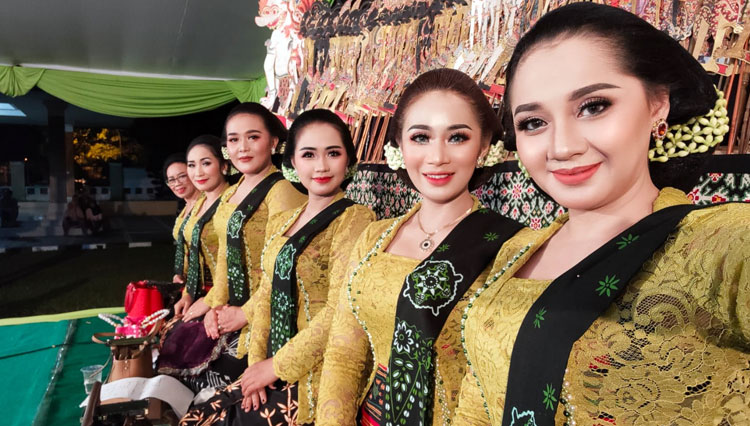
インドラマユの伝統音楽といえばガムラン（Gamelan）やカロンチョン（Keroncong）が有名です。そして、その中心にいるのが「シンドレン」と呼ばれる歌い手たち。彼らの透き通った歌声は、地元の物語や愛の歌を感情豊かに伝え、多くの人々を魅了します。 - ランタン祭り（Lantern Festival）
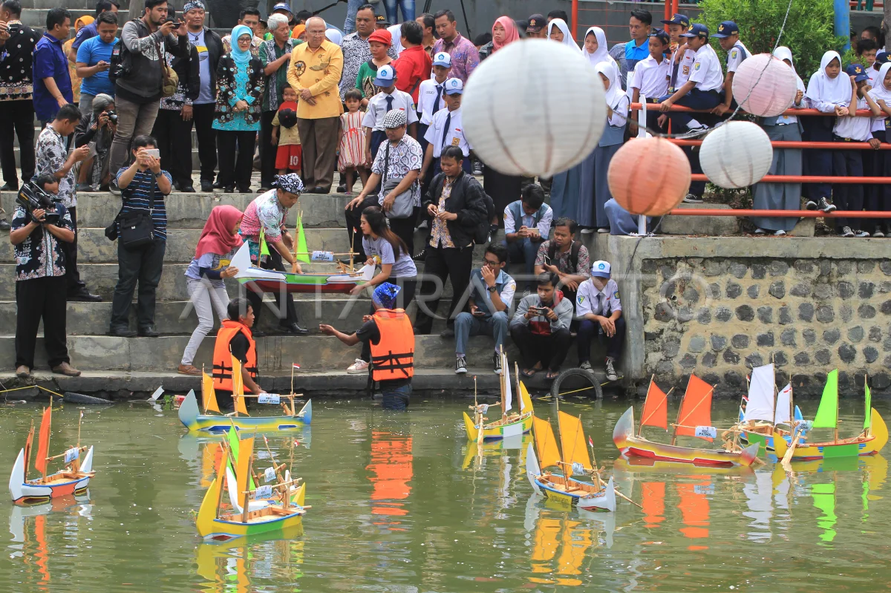
インドラマユの文化的なハイライトの一つが、この美しいランタン祭り。チマヌク川を彩るカラフルなランタンが夜空に浮かび、音楽やダンスとともに街全体が賑わいを見せます。地域の結束力と創造性を感じられる、特別なイベントです。 - 農業と漁業文化
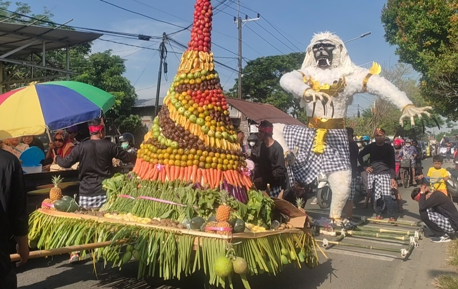 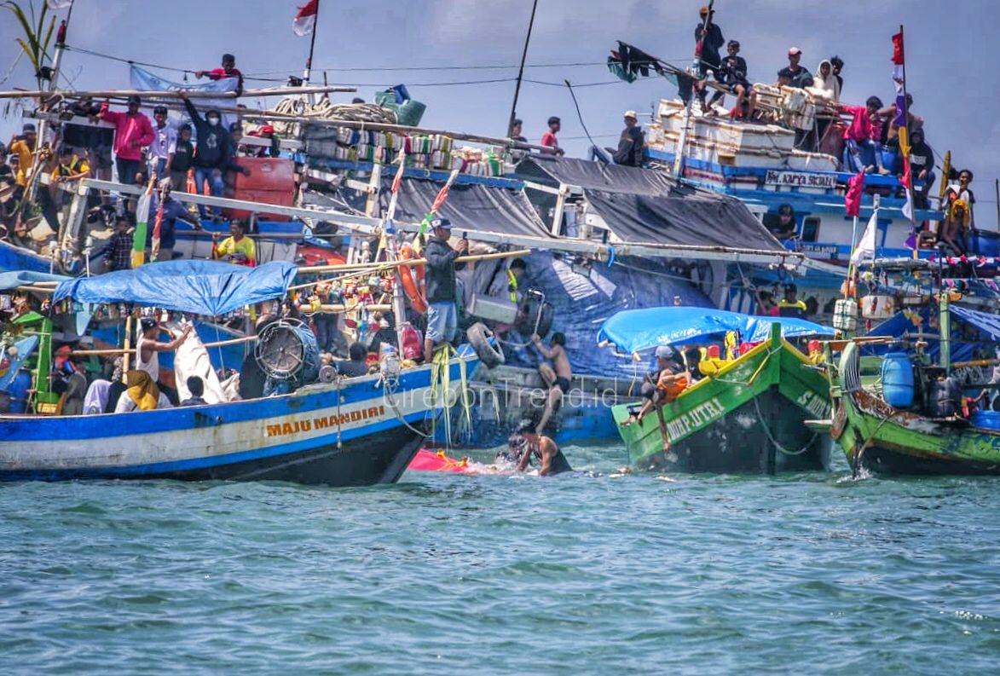 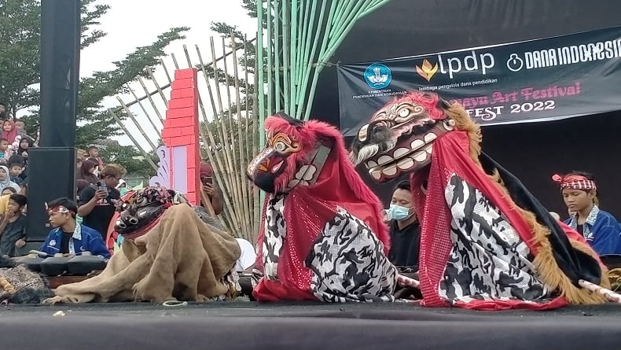 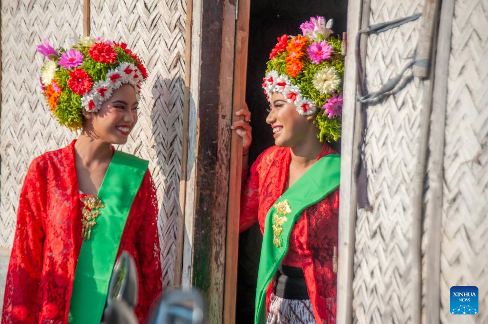
インドラマユは農業と漁業が基盤の町。稲作や漁業をテーマにした祭りや儀式も多く行われています。地元の人々は自然と調和しながら生活しており、その中で育まれた知恵や価値観が文化の一部として残っています。
インドラマユの文化は、ただ楽しむだけでなく、地元の人々の暮らしや精神を感じることができます。一度体験すれば、この町の豊かさと温かさに魅了されることでしょう！
地元グルメを堪能しよう
- ナシレンコ（Nasi Lengko）
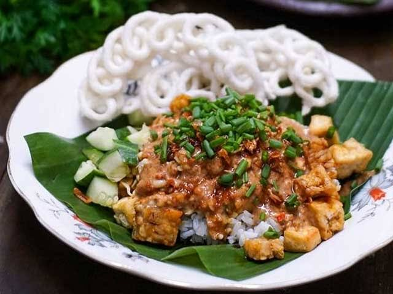 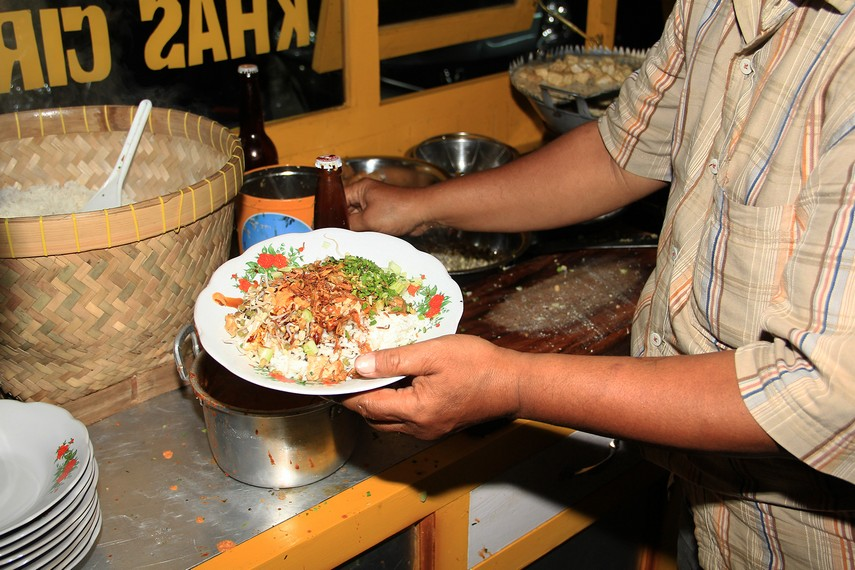
インドラマユの定番料理！ 白ご飯に新鮮な野菜（モヤシやキュウリなど）、揚げた豆腐やテンペ（大豆発酵食品）をのせ、ピーナッツソースをたっぷりかけたヘルシーな一品。シンプルながら、素材の味が引き立ち、何度でも食べたくなる味わいです。ヘルシー志向の方にもおすすめ！ - シーフードの楽園
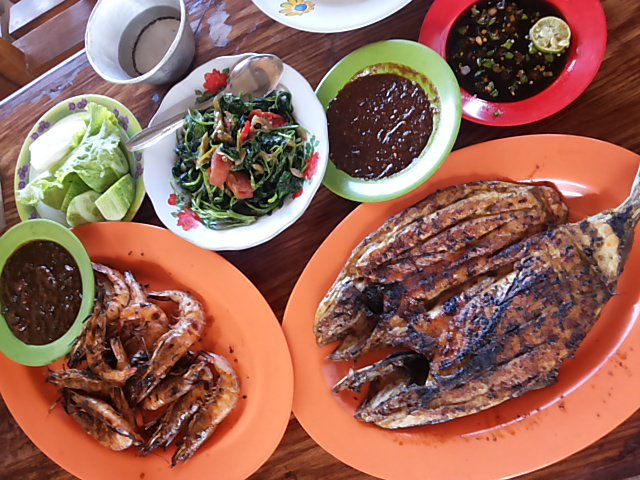 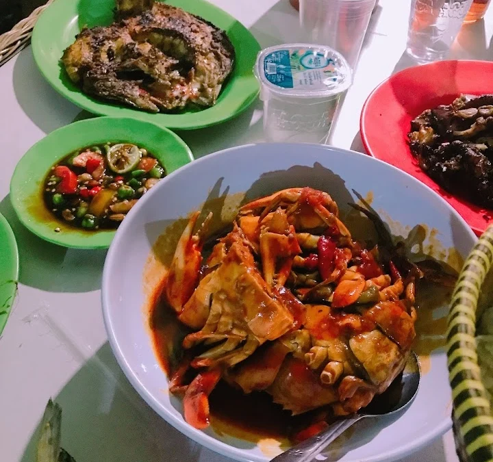
沿岸地域ならではの新鮮な海産物が自慢のインドラマユ。 イカン・バカール（Ikan Bakar）, 魚を炭火で焼き、甘辛いソースをかけて食べる一品。海の香りとスモーキーな風味がたまりません！ - セガ・ジャムブー（Sega Jamblang）
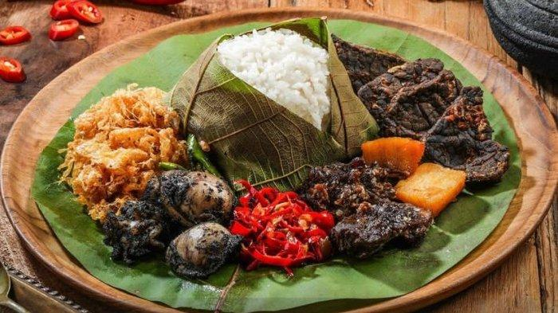 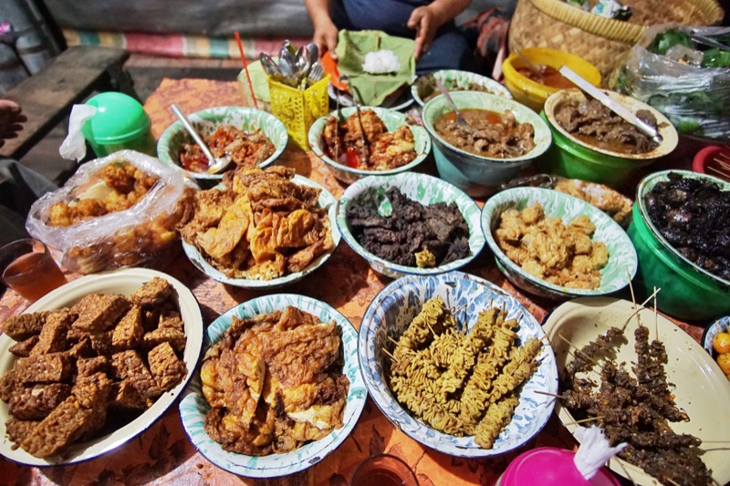
木の葉で包まれたご飯（「ジャムブー」と呼ばれる植物の葉）に、様々な付け合わせを盛り付けたミニ定食スタイルの料理。
地元の人々のランチ定番メニューで、鶏肉の煮込み、炒めたテンペ、ゆで卵のスパイシーソース和えなど、色々な味を少しずつ楽しめるのが魅力です。 -
ペピス・イカン（Pepes Ikan）
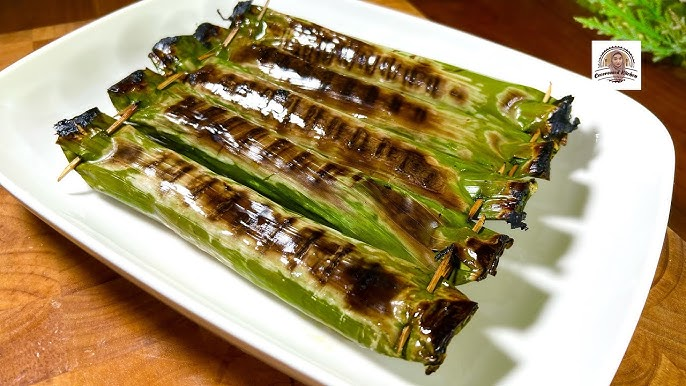 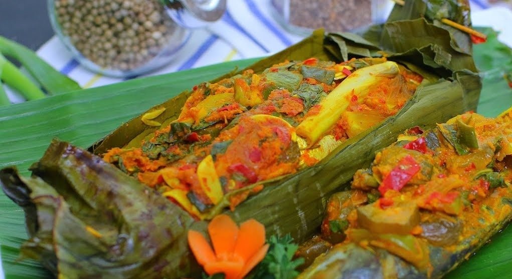
新鮮な魚をバナナの葉で包み、スパイスとともに蒸し焼きにした料理。 素材の味を生かしつつ、レモングラスや唐辛子、ココナッツなどの香りが魚に染み込み、一口食べると口いっぱいに広がる風味がたまりません。インドラマユの沿岸地域ならではの逸品！